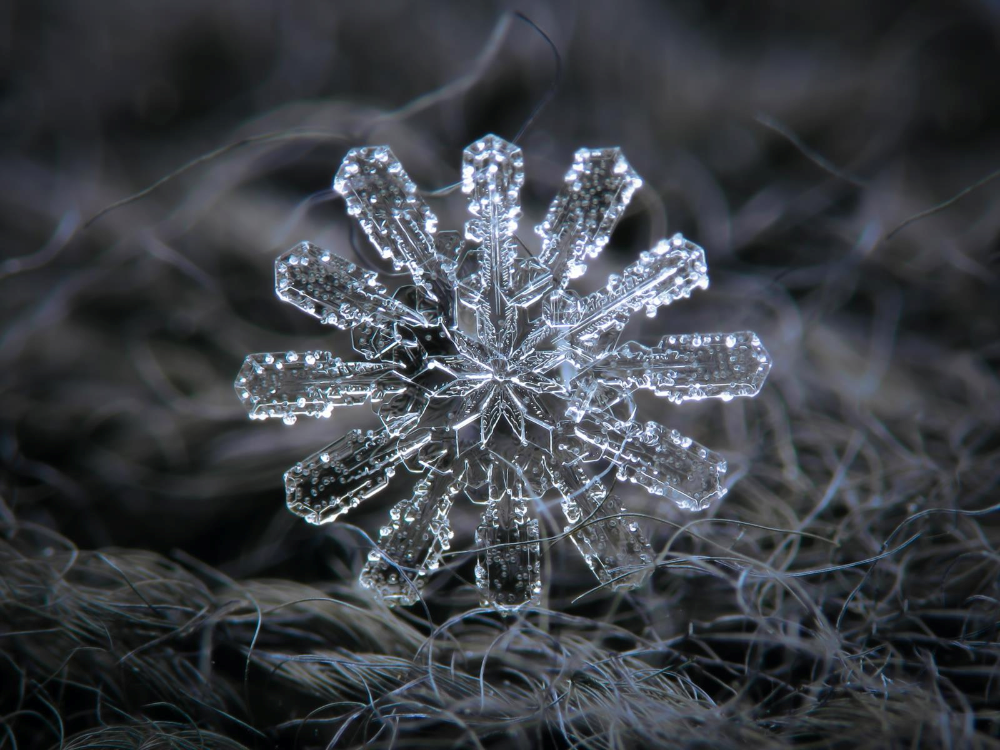

Macro Photography Course
by Ravi Coombes
This course will be aimed to show a different perspective to photography, looking into macro shots specifically led by Bath Spa photography students with the use of high-quality university equipment.
Requirements
No requirements apart from if you have any objects you would like to look at and shoot on a minute scale, bring them along!
Location
Hillside Hall Community Centre
BA2 3NX
Tags
#macro #photography